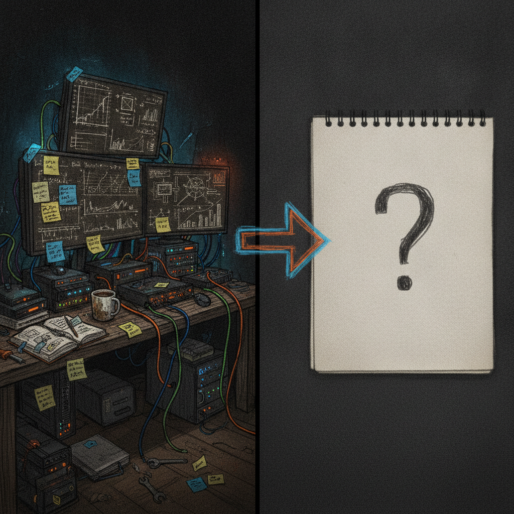

Trying to Explain a Meme Coin to Someone Who Is Not Chronically Online
I stopped on this one because I have lived it. Not with $COAL specifically, but with the exact conversation: someone you care about asks what you are looking at on your phone, and you realize there is no short answer.
What was bookmarked
@asyla_sol posted a quick, funny line: he was literally in the middle of trying to explain $COAL to his girlfriend, with an image attached to the post. There is no thread, no whitepaper link, no explainer. Just the moment, captured in real time. The post does not say what $COAL actually does, what chain it lives on beyond the handle suggesting Solana, or what the roadmap looks like, and I am not going to guess at any of that.

Why it matters
This is a small post, but it points at something real in crypto culture: the gap between people who live inside the timeline and everyone else. Every community, from big Layer 1s to tiny meme coins, runs into this same wall. The people building and trading understand the joke, the chart, the lore, the in-group references. Everyone else just sees numbers going up and down and a word they have never heard.
That gap is not a small thing. It is basically the whole onboarding problem for crypto, distilled into one relatable sentence.
The practical breakdown
What it highlights: how much shared context crypto communities build up without noticing, and how invisible that context is to outsiders.
Who it helps: anyone thinking about onboarding, community building, or explaining a project to a non-crypto audience. This applies whether you are running a meme coin, a serious infrastructure project, or a nonprofit trying to explain blockchain to a donor.
What still needs work: the actual explanation. A funny tweet about the struggle is not the same as solving it. If a project wants people outside the bubble to get it, someone eventually has to write the one paragraph, plain language version.
What I would test first: try explaining your own project to someone with zero context, out loud, without touching a chart or a chain name. If you cannot do it in two sentences, that is useful information about your own messaging, not a failure on their part.
Rick's take
I like this post because it is honest in a way most crypto content is not. No hype, no chart, just a guy admitting the thing is hard to explain, which is more useful than it looks. I have had this exact conversation trying to explain Chia to people who just want to know why a farm on a hard drive is worth anything. It never comes out clean the first time, and I have made peace with that.
What I like about @asyla_sol posting this is that it is a small, human admission that most of the crypto space skips past. We talk a lot about adoption and onboarding in the abstract, but the real test is always one conversation with one person who has no reason to care yet. If more builders sat with that discomfort instead of avoiding it, I think we would get better explanations across the board, not just for meme coins.
What to watch next
I am not expecting $COAL to turn into a case study in crypto communication. It might just stay a meme coin with an inside joke attached to it, and that is fine. What I am watching more broadly is whether projects, big or small, start treating the "explain it to someone who is not online" test as a real design constraint instead of an afterthought. That is a trend worth noticing wherever it shows up.
Source and links
Source: X post by @asyla_sol, https://x.com/i/web/status/2077218409029292225, retrieved 2026-07-15.
External references: none provided in the source post.